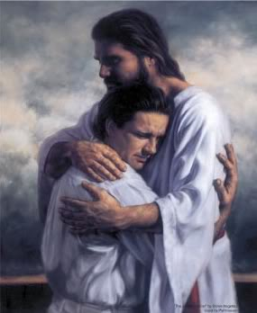

Eloi Eloi lama sabachthani
I am forever grateful that I will never have need to utter these words. I have been dealing with some heavy things lately. Things that should have been resolved a long time ago, and probably would have had I followed wiser counsel. When I tried to start the path to resolution, I did it my way, like a bullheaded idiot. I went right for it, no beating around, just came out with it. Against better council. Like is normal for Navarre. And it was utterly wrong. I was unprepared, but not only was I unprepared, others were unprepared as well. Other things should have taken place first, the situation should have been handled more delicately. Most of all, the inciting incidents should never have happened in the first place.
I encourage you all to do your best to resist sin of any nature. I lashed out unhealthily, and it has caused grief and heartache to a number of people. Sin oftentimes takes this nature, we like to justify what we do by thinking we will be the only ones hurt. When you sin, there are always victims. Victims can be the recipients of your horrid actions. Victims can be a loved one, a parent or sibling, who want what's best for you and are crushed at the realization that you are a worse creature than they could have ever believed or imagined.
Your sin can lead to a cycle of destructiveness. If you've ever said, in your head, "well, I'm screwed anyways, what's one more sin gonna change," you are stuck in this cycle. It's destructive, it's not worth it. Eventually you will have to answer for what you've done. You will need to face the consequences of your actions. You can ignore them as much as you want, you can do good deeds until you've destroyed 4 pairs of shoes in the service and it will not be done. You can't cover your misdeeds with the callouses on your knees from falling to them often in prayer. Prayer will drive the spirit to you, and you will feel the acute sharpness of your guilt.
The shame doesn't go away. Even when you go through the appropriate channels, it's never truly gone. You will forever question whether you will be able to enter Celestial Glory, though others have assured you that it is still a possibility. If you get married, it will get worse. Your shame and anguish will deepen, and if you decided to wait until after marriage to "come clean," you will wrestle with the guilt of losing that which you hold most dear after this life.
Don't do it. Repent. Follow the counsel of those who's council you have sought.
Read your scriptures. Pray. Man up and face your shame. Sometimes you will have to wait. If you have victimized someone, you will have to wait until they decide it is time to communicate and begin the healing process. In the meantime, think about what you've done. Understand that your guilt, shame and despair are necessary to understand the pain and anguish you have caused not only to the victims and those around you and them, but also to our Heavenly Father, and to our Savior, Jesus Christ. Your selfish monstrous actions have caused him, a sinless man, to suffer.
In the same light, the Lord will not forsake you. Not ever. While you work towards wholeness again, he will send his spirit to lift you up. Be open to those promptings, the answer isn't over the edge. Taking that leap is selfishness. Others deserve answers, and by denying them that, you are sinning further.
I believe in a concept of Hell taught to me by my Dad. Hell is where the man you have become comes face to face with the man you could have been. I face that man often. I face that man at church, in my family. I face that man when I think of my Dad, when I interact with my wife's father, with her grandfather, when I watch General Conference. I feel that deep abiding sense of failure and guilt at what I could have been, what I could have accomplished. But I also feel hope, and that is my driving force. A hope in the atonement, a hope for fullness.
I encourage you all to do your best to resist sin of any nature. I lashed out unhealthily, and it has caused grief and heartache to a number of people. Sin oftentimes takes this nature, we like to justify what we do by thinking we will be the only ones hurt. When you sin, there are always victims. Victims can be the recipients of your horrid actions. Victims can be a loved one, a parent or sibling, who want what's best for you and are crushed at the realization that you are a worse creature than they could have ever believed or imagined.
Your sin can lead to a cycle of destructiveness. If you've ever said, in your head, "well, I'm screwed anyways, what's one more sin gonna change," you are stuck in this cycle. It's destructive, it's not worth it. Eventually you will have to answer for what you've done. You will need to face the consequences of your actions. You can ignore them as much as you want, you can do good deeds until you've destroyed 4 pairs of shoes in the service and it will not be done. You can't cover your misdeeds with the callouses on your knees from falling to them often in prayer. Prayer will drive the spirit to you, and you will feel the acute sharpness of your guilt.
The shame doesn't go away. Even when you go through the appropriate channels, it's never truly gone. You will forever question whether you will be able to enter Celestial Glory, though others have assured you that it is still a possibility. If you get married, it will get worse. Your shame and anguish will deepen, and if you decided to wait until after marriage to "come clean," you will wrestle with the guilt of losing that which you hold most dear after this life.
Don't do it. Repent. Follow the counsel of those who's council you have sought.
Read your scriptures. Pray. Man up and face your shame. Sometimes you will have to wait. If you have victimized someone, you will have to wait until they decide it is time to communicate and begin the healing process. In the meantime, think about what you've done. Understand that your guilt, shame and despair are necessary to understand the pain and anguish you have caused not only to the victims and those around you and them, but also to our Heavenly Father, and to our Savior, Jesus Christ. Your selfish monstrous actions have caused him, a sinless man, to suffer.
In the same light, the Lord will not forsake you. Not ever. While you work towards wholeness again, he will send his spirit to lift you up. Be open to those promptings, the answer isn't over the edge. Taking that leap is selfishness. Others deserve answers, and by denying them that, you are sinning further.
I believe in a concept of Hell taught to me by my Dad. Hell is where the man you have become comes face to face with the man you could have been. I face that man often. I face that man at church, in my family. I face that man when I think of my Dad, when I interact with my wife's father, with her grandfather, when I watch General Conference. I feel that deep abiding sense of failure and guilt at what I could have been, what I could have accomplished. But I also feel hope, and that is my driving force. A hope in the atonement, a hope for fullness.
I have a hard time going to
church, knowing what I've done. My
bishop has given me permission to go to the temple, but I often still feel dirty and
wrong when I do, so I don't go as often as I probably should. I skip church a lot, I don't feel like I
belong. I haven't read my scriptures or
even prayed in, I don't know how long, and all because of what I did. I still believe strongly in the
church and it's teachings, that will never change, but I often don't feel worthy to
participate in the Lord's loving kindness.
Recently, the path to wholeness has opened again. A door, ever so slightly ajar. I hope this path will finally lead back to that feeling of oneness with the Lord and my fellow man. I know that the things I have done will hang over me forever, but I also believe and have felt the cleansing and healing power of the Lord's eternal atonement, and it is something I crave.
This is my favorite quote:
"What we do in life, echoes for eternity"
I find this so true. What we do here, now, is so monumentally important to our eternal future.
I LOVE quotes, and there are a number of quotes that I turn to as I work through my issues and towards a new fullness. I'll end here by sharing some of them with you.
"It is impossible for us to break the law. We can only break ourselves against the law." -Cecil B. DeMille
"Be kind, for everyone you meet is fighting a hard battle." -Plato
"Fall seven times, stand up eight" -Chinese Proverb
"We are sons and daughters of an immortal, loving, and all-powerful Father in Heaven. We are created as much from the dust of eternity as we are from the dust of the earth." -Joseph B. Wirthlin
"The Lord won't make you obey, but he'll make you wish you had!"
"A religion that does not require the sacrifice of all things never has power sufficient to produce the faith necessary unto life and salvation." -Joseph Smith
"It's never too late to be what you might have been." -George Eliot
"While God is over all things, He does not do our choosing for us." -Neal A. Maxwell
"Do not suppose that God willfully causes that which, for his own purposes, he permits." -Boyd K. Packer
"Trailing clouds of Glory do we come from God, who is our home." -Wordsworth
"Yes, love, love indeed is light from heaven; a spark of that immortal fire." -George Gordon Byron
"I believe in He who moves all the heavens with His love and His desire. This is the origin, this is the spark that then extends into a vivid flame and, like a star in heaven, glows in me." -Dante
"Good men sometimes make mistakes. A man of integrity will honestly face and correct his mistakes..." -D. Todd Christofferson
"Today is part of eternity." -David O. McKay
"Some of the greatest battles will be fought within the silent chambers of your own soul." -Ezra Taft Benson
"Christ died for men precisely because men are not worth dying for; to make them worth it." -C.S. Lewis
 |
| This I desperately yearn for. |
{kind=link}